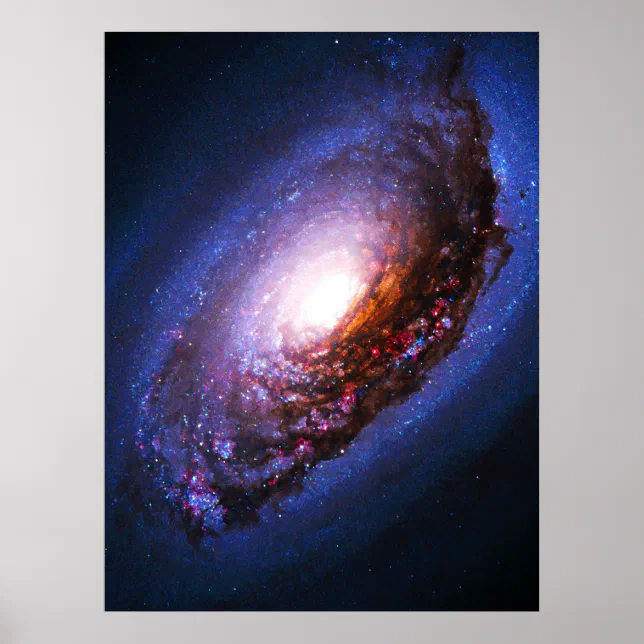

Guia das Galáxias
Galáxia de Olho Negro
Descrição
A galáxia de Olho Negro (Messier 64, NGC)

Dados Interessantes
É rica em gases e poeira.
Foi batizada por Fernão de Magalhães.
A Grande Nuvem de Magalhães é uma das galáxias mais proximas da Via Lactea